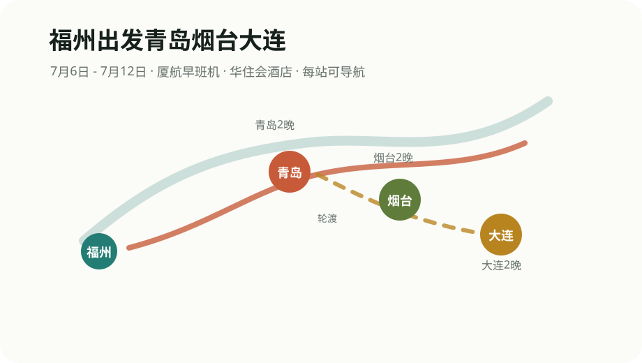

去程航班
7月6日 08:55 福州长乐国际机场起飞，11:15 到青岛胶东国际机场。建议 07:00 前到机场。
2026.07.06 - 07.12
厦航 08:55 福州起飞，11:15 到青岛胶东。青岛住五四广场小麦岛桔子水晶，先走东海岸，再走老城、八大关和第二海水浴场，第三天只留啤酒博物馆后转烟台。

Route
Food
Traffic
7月6日 08:55 福州长乐国际机场起飞，11:15 到青岛胶东国际机场。建议 07:00 前到机场。
7月8日啤酒博物馆后去青岛站或青岛北站，优先选到烟台站，离所城里和朝阳街更近。
7月10日按船班去烟台港或指定码头，提前确认码头、船名、安检和到港码头。
7月12日只安排市区收尾，去周水子机场预留 2.5-3 小时。
Hotel
Notes
青岛 D1 已提前放入石老人海水浴场、海之恋公园、小麦岛公园和五四广场；D2 加入圣弥额尔大教堂、鲁迅公园、八大关和第二海水浴场；D3 只留青岛啤酒博物馆。
众品老方子锅贴甜沫放在 D1 加餐、D2 早市后补漏，D3 午餐也保留为啤酒博物馆后的轻松选择。
车次、船班、航班价格和酒店价格会实时变化，正式下单前以官方页面为准。